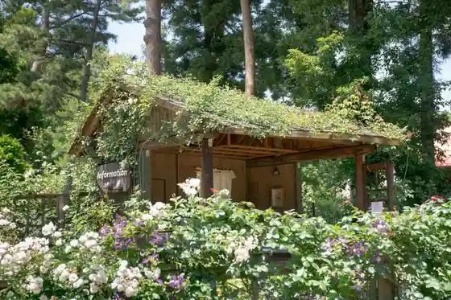
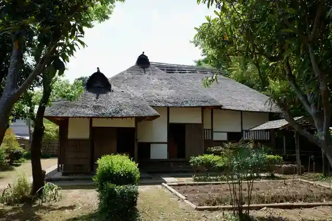
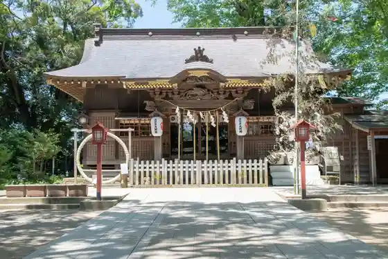
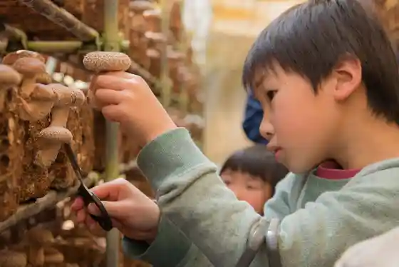

Hiyodori Saka
Sakura, Chiba · 043-484-6146 · Official / source link
Sakura Kusa Bue no Oka
Sakura, Chiba · 043-485-7821 · Official / source link

Sakura Buke Residence
Sakura, Chiba · 043-486-2947 · Official / source link

Asa Ga Ta Shrine
Sakura, Chiba · 043-484-0392 · Official / source link

Sakura Ki no Ko Sono
Sakura, Chiba · 043-486-3987 · Official / source link

Sakura Castle Park
Sakura, Chiba · 043-484-0679 · Official / source link
Yamaman Yukarigaoka Sen
Sakura, Chiba · 043-487-5036 · Official / source link
Sakura Rabenda Land
Sakura, Chiba · 043-463-1382 · Official / source link
Sakura Ritsu Art Museum
Sakura, Chiba · 043-485-7851 · Official / source link
Kyu Hotta Tei (Sakura Garden)
Sakura, Chiba · 043-483-2390 · Official / source link
Sakura Juntendo Memorial Museum
Sakura, Chiba · 043-485-5017 · Official / source link
KK Yamaman Yukari Farm
Sakura, Chiba · 043-464-0039 · Official / source link
Asotsu Kura
Sakura, Chiba · 043-485-2407 · Official / source link
Tsukamoto Art Museum
Sakura, Chiba · 043-486-7097 · Official / source link
Nosambutsu Chokubai Tokoro Kashi no Ki Minami Yukarigaoka Mise
Sakura, Chiba · 043-463-8877 · Official / source link
Sakura Shin Town Ohayashi Kan
Sakura, Chiba · 043-486-4992 · Official / source link
Yamaman Yukari Farm Nosambutsu Chokubai Tokoro Kashi no Ki Main Shop
Sakura, Chiba · 043-463-8877 · Official / source link
JA Chiba Mirai Nosambutsu Chokubai Tokoro Yasai Hatake Sakura Mise
Sakura, Chiba · 043-485-6115 · Official / source link
Marushiekashima
Sakura, Chiba · 043-310-7790 · Official / source link